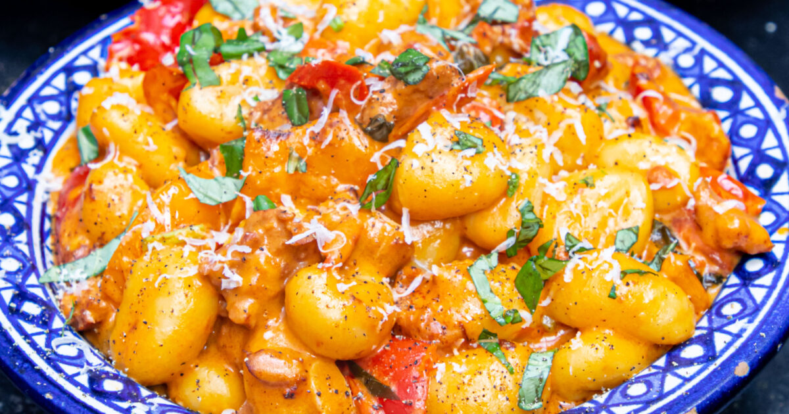

One Pan Chorizo Gnoccchi

Description
This one-pan wonder is a total game-changer! It's packed with smoky chorizo and sweet cherry tomatoes, creating a rich, flavorful base. Then comes the creamy mascarpone to make it irresistibly smooth. With all that flavor and only one pan to clean, it's perfect for a quick, fuss-free meal that everyone will love. Plus, peppers add a nice crunch! What's not to love?
Ingredients
Serves 4
- Chorizo - 1
- Bell Peppers - 2
- Cherry Tomatoes - 250g
- Garlic - 3 cloves
- Red Chilli - 1
- Gnoccchi - 400g
- Red Wine Vinegar - 1.5 tbsp
- Mascarpones - 1 tbsp
- Basil - 1 Bunch
- Parmesan - To serve
Steps
- Break your chorizo ring into small chunks and start to fry in a large pan. Chop your peppers into cubes and add them to the pan, stirring them and allowing them to fry in the chorizo fat.
- Once the chorizo and peppers begin to cook, add your cherry tomatoes whole. Stir and continue to cook on a high heat. Slice your red chilli and garlic and add them to the pan.